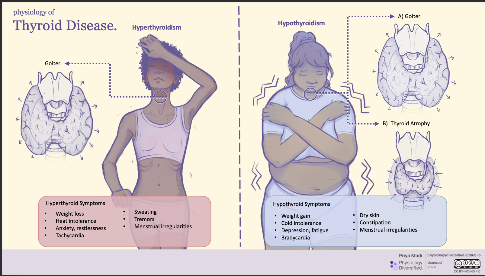

Every disorder on this page is a break somewhere along a single feedback loop, or a lump growing next to it.
Get the loop fluent first and the disease list becomes a set of variations rather than a list to memorize.
OrientThe axis, what thyroid hormone does, and the primary–central split
The hypothalamic–pituitary–thyroid axis
The loop
Hypothalamus releases TRH → anterior pituitary releases TSH → thyroid follicular cells release
T4 (mostly) and T3 (some) → peripheral deiodinase converts T4 to T3 → T3 is the active hormone
at nuclear receptors. Negative feedback closes the loop at both the hypothalamus and the pituitary.
Original diagram. In primary disease the break is at the gland, so TSH moves opposite to the hormone problem.
In central (secondary or tertiary) disease the break is upstream, so TSH stays low or inappropriately normal regardless of T4.
What thyroid hormone actually does
Brain maturation · bone maturation · linear growth · thermogenesis · myocardial contractility ·
hepatic maturation · skin maturation · increased catecholamine sensitivity · heart rate and blood pressure.
That catecholamine line is why a hyperthyroid patient looks adrenergically revved up, and why a beta blocker helps.
Primary vs central, stated plainly
Primary — gland is broken. ↑TSH in hypothyroidism, ↓TSH in hyperthyroidism.
Central (secondary = pituitary, tertiary = hypothalamus) — TSH is low or inappropriately normal regardless of T4.
An "inappropriately normal" TSH beside a low free T4 is the finding people miss.

Figure by Priya Modi, Physiology Diversified.
Licensed CC BY-NC-ND 4.0 — reproduced unmodified, with attribution, for non-commercial educational use.
This is the one image on this site that is not original; everything else is drawn from scratch.
What the objectives ask of you, for every disorder below
Identify the underlying cause — congenital, embryologic, autoimmune, infectious, nutritional, or neoplastic.
Distinguish primary from secondary from tertiary. Recognize the signs and symptoms, including newborn-screening abnormalities where relevant.
Select and interpret the right laboratory, imaging, and pathologic studies. And identify the
indications for fine-needle aspiration, biopsy, or surgery.
RecognizePresentation, examination findings, and the characteristic lab picture
Congenital hypothyroidism
Usually detected through universal newborn screening; most cases are sporadic.
Speed is the whole point
T4 is essential for early brain and skeletal development, and the window does not reopen.
Severe untreated congenital hypothyroidism developing in infancy or early childhood is what the older literature calls
cretinism — a term now avoided clinically but still occasionally encountered in older texts. Start levothyroxine as soon as the screen flags it; do not let a confirmatory workup delay treatment.
Etiology
Thyroid dysgenesis is the most common cause: hypoplasia or aplasia, or an ectopic gland from a migration defect
during embryogenesis — most commonly a lingual gland.
Dyshormonogenesis: an inborn error of hormone synthesis, secretion, or metabolism. Often familial. The gland is
present but works incompletely or not at all — for example an organification defect or a TSH-receptor abnormality.
Imaging — and how to read it
Tc-99 scan. Tissue seen in the wrong place → ectopic gland, a migration defect.
A normal-looking gland in a hypothyroid infant → dyshormonogenesis, because the tissue is there but not functioning.
No gland seen → aplasia or dysgenesis; follow up with ultrasound.
Classic signs and symptoms
Macroglossia · coarse facies · umbilical hernia · lethargy, irritability, poor feeding ·
poor growth and weight gain · a persistently large, open fontanel · persistent jaundice · temperature instability ·
delayed passage of the first stool · edema. Most affected newborns look well at birth, which is precisely why the
screening programme exists.
Localizing congenital hypothyroidism. Treatment is levothyroxine — synthetic T4 — in both.
Pattern
TSH
T4 / T3
Where the defect is
Primary
High
Low
The thyroid gland itself
Central (secondary or tertiary)
Low or normal
Low
Pituitary or hypothalamus — think congenital hypopituitarism
The newborn screen trap
A low total T4 with a normal TSH in an otherwise well, term, normal-weight infant is usually
thyroxine-binding globulin deficiency, not thyroid disease. Total T4 tracks the binding protein; the
free T4 and TSH are normal, the axis is intact, and no treatment is needed. Confirm with a free T4 rather than
repeating a total T4. Two other explanations to hold in mind for the same pattern are central hypothyroidism and a
delayed TSH surge — the latter particularly in premature, low-birth-weight, or critically ill infants, which is
why the well term infant points away from it.
Acquired hypothyroidism and Hashimoto thyroiditis
In iodine-sufficient countries, autoimmune disease is the dominant cause.
Mechanism
Multiple mechanisms acting together: cytotoxicity mediated by CD8+ and CD4+ T cells, cytokines, and antithyroid antibodies. The gland shows progressive destruction of parenchyma, Hürthle cell change, and a mononuclear (lymphoplasmacytic) infiltrate. Destruction eventually produces hypothyroidism.
The long silent phase
A patient can carry circulating thyroid antibodies for years — or a lifetime — before hypothyroidism develops. Antibody positivity is therefore not the same as disease, and a normal TSH today does not exclude Hashimoto tomorrow.
Labs and treatment
↑TSH, ↓free T4 — the primary pattern. Confirm the autoimmune etiology with anti-thyroid peroxidase (anti-TPO) and anti-thyroglobulin (anti-TG) antibodies. Imaging (ultrasound, radioactive iodine uptake) is optional, not required. Treat with levothyroxine.
Myxedema — acquired hypothyroidism in older children and adults
Goiter · immature body proportions · fatigue and decreased energy · increased sleep ·
cold intolerance · dry skin and brittle hair · constipation · pubertal delay in children.
Other acquired causes to know
Iodine deficiency — the common cause worldwide, no longer common in the United States ·
prior thyroid surgery or treatment for hyperthyroidism · radiation ·
medications, specifically lithium and amiodarone.
Autoimmune polyglandular syndrome — the company Hashimoto keeps
APS 1: autosomal recessive, AIRE gene mutation → hypoparathyroidism, adrenal insufficiency, hypogonadism, vitiligo.
APS 2: autosomal dominant, multifactorial → adrenal insufficiency, Hashimoto thyroiditis, and T1DM.
The clinical habit worth building: one autoimmune endocrinopathy is a reason to keep an eye on the others.
Cross-reference T1DM.
Anti-TPO antibody. The TSH and free T4 have already localized the problem to the gland; the remaining question is why,
and anti-TPO answers it serologically. TSI is the Graves antibody — wrong direction of disease.
A radioactive iodine uptake scan belongs to the hyperthyroid workup, where it separates Graves from a toxic nodule from
thyroiditis. Free T3 tells you about severity, not etiology, and is often not even ordered.
Graves disease
The most common cause of hyperthyroidism; classically affects younger women.
Hyperthyroidism is not the same word as thyrotoxicosis
Thyrotoxicosis is excess thyroid hormone from any cause — including a gland that is leaking preformed hormone,
or hormone somebody swallowed. Hyperthyroidism means the thyroid gland itself is overproducing.
Every thyroiditis on this page causes thyrotoxicosis without hyperthyroidism, which is exactly why their iodine uptake is low.
Mechanism
Thyroid-stimulating immunoglobulins (TSI), also called TSH-receptor stimulating antibodies,
bind and activate the TSH receptor. The result is continuous, unregulated stimulation — so the gland both
enlarges diffusely and overproduces. An antibody is doing the job TSH normally does, and no feedback loop can switch it off.
Diagnosis
↑free T4, ↑free T3 or T3, ↓TSH. Antibodies: TSI or TSH-receptor antibody,
plus anti-TPO and anti-TG. Imaging: radioactive iodine (I-123 / I-131) uptake scan.
Original diagram — the uptake scan is the test that separates the three causes of a thyrotoxic patient.
The logic is worth saying out loud: uptake measures whether the gland is making hormone. A thyroiditis is releasing
hormone it made earlier, so it takes up nothing.
Signs and symptoms
The hypermetabolic, adrenergically amplified picture: weight loss despite good appetite, heat intolerance,
sweating, palpitations and tachycardia, tremor, anxiety and irritability, insomnia, frequent bowel movements, proximal muscle weakness,
and menstrual irregularity. On examination, a diffuse goiter, a stare or lid lag, and warm moist skin.
Two findings are specific to Graves rather than to thyrotoxicosis generally: Graves ophthalmopathy with exophthalmos
and pretibial myxedema.
Treatment
Medical: methimazole, propylthiouracil (PTU), and beta blockers for symptom control.
Definitive: surgery or I-131 radioactive iodine ablation. Details in the pharmacology section.
Neonatal Graves disease and thyroid storm
Two high-acuity presentations that follow directly from Graves pathophysiology.
Mechanism
Transplacental transfer of maternal TSH-receptor antibodies. The infant's own thyroid is normal — it is simply being stimulated by an antibody that crossed over. Almost always transient, resolving as the maternal antibody clears.
The trap that kills
Fetal thyrotoxicosis is possible in any mother with a history of Graves disease, regardless of her current thyroid status or treatment. TSI persists even after maternal thyroidectomy or radioablation — the gland is gone, the antibody is not. A euthyroid post-thyroidectomy mother is not a reassuring history.
Symptoms
Tachycardia · cardiomegaly and heart failure · irritability and restlessness · small for gestational age · prematurity · microcephaly · hepatosplenomegaly · stare or exophthalmos, from increased sympathetic stimulation of levator palpebrae superioris.
Evaluation and treatment
↓TSH, ↑T4 and T3. Check thyroid antibodies in both infant and mother — TSH-receptor antibody and TSI. Treat with a beta blocker, PTU or methimazole, and iodine solution, for 2–4 months — until the circulating maternal antibodies resolve.
The pattern to recognize
Occurs in untreated or undertreated hyperthyroidism, typically with a precipitating event such as surgery or infection.
It is a hypermetabolic state: fever, tachycardia, nausea and vomiting, agitation, psychosis — progressing in the late stage to
stupor, coma, and hypotension. The transition from agitated and hypertensive to obtunded and hypotensive is the ominous one.
The reason a stressor precipitates it is worth holding: surgery or sepsis triggers a surge of catecholamines onto tissue that
thyroid hormone has already made hypersensitive to them. That is also why a beta blocker is central to management.
Thyroiditis — telling the four apart
Named individually in the course objectives. The comparative detail below is drawn from open-access references and cited.
Two questions separate almost all of these at the bedside: does it hurt? and what is the uptake?
Type
Pain
Hormone course
RAI uptake
Signature
Subacute granulomatous (de Quervain)
Painful, tender gland
Transient thyrotoxic → hypothyroid → usually recovers
Low
Follows a viral illness; raised inflammatory markers. The pain is what makes this one recognizable on a stem.
Transient thyrotoxic → hypothyroid → usually recovers
Low
Autoimmune, classically postpartum. Same triphasic course as de Quervain, without the pain.
Hashimoto (chronic lymphocytic)
Usually painless
Often euthyroid, sometimes a brief thyrotoxic phase (hashitoxicosis), then permanent hypothyroidism
Variable
Anti-TPO and anti-TG positive, firm goiter. The one that does not recover.
Riedel thyroiditis
Usually painless
Variable; hypothyroid if enough gland is replaced
Variable
Rare. A rock-hard, woody, fixed gland from dense fibrosis that extends into surrounding neck structures. Mimics anaplastic carcinoma — and that is the differential that matters.
Why the uptake is low in the subacute forms
Damaged follicles leak preformed hormone, producing low uptake; antithyroid drugs do not help because new hormone is not being synthesized.
Goiter, thyroglossal duct cyst, and nonthyroidal illness
Diffuse and multinodular goiter
A goiter is simply an enlarged thyroid gland, and it reflects impaired thyroid hormone synthesis:
output falls, TSH rises, and the rise in TSH drives hypertrophy and hyperplasia.
Simple (diffuse) non-toxic goiter includes endemic goiter.
Multinodular toxic goiter arises from recurrent cycles of hyperplasia and involution, producing irregular enlargement —
and is often mistaken for neoplasia, which is precisely the reason it is worth knowing.
Thyroglossal duct cyst
A fibrous cyst forming from a persistent thyroglossal duct — the tract the thyroid descended along during
embryogenesis. Presents in the midline, anterior to the trachea. The cyst pockets fill with clear secretions and mucus,
and enlarge when infected, which is often when they are noticed.
Midline is the discriminator: a lateral neck mass is a different differential.
Nonthyroidal illness syndrome — also called sick euthyroid syndrome
Abnormal thyroid laboratory values in a patient who is systemically ill but does not have primary thyroid disease.
The classic picture is a low T3 with a normal-to-low TSH and a normal-to-low T4.
Do not chase the numbers: treat the underlying illness and, if needed, re-test once the patient has recovered.
Diagnosing and treating "hypothyroidism" in an intensive care unit on the strength of these values is the error the concept exists to prevent.
Thyroid nodules and the four carcinomas
Know the characteristic pathology and associations of each major type.
Risk factors and presentation
Risk: female preponderance · radiation exposure to the head and neck ·
exposure to radiation fallout · history of goiter · family history of thyroid cancer.
Presentation: a neck mass, sometimes rapidly enlarging, with dysphagia, hoarseness, cough, or
enlarged lymph nodes. Hoarseness deserves particular attention — it implies recurrent laryngeal nerve involvement.
Know these four cold. Their relative frequency and signature findings answer most stems.
Type
Frequency
Signature
The point to carry
Papillary
Most common
Empty nuclei devoid of nucleoli — "Orphan Annie eye" nuclei — and psammoma bodies
Excellent prognosis. Commonly seen after prior ionizing radiation exposure. Treated with surgical excision, with or without radioactive iodine ablation.
Follicular
Second most common
Invasion through the capsule is what defines malignancy
Multinodular goiter may predispose; increased incidence in iodine-deficient regions. Appears as a cold nodule. Treatment is surgical excision.
Medullary
Uncommon
Calcitonin secretion — it is a neuroendocrine neoplasm arising from parafollicular C cells
Mostly sporadic, but hereditary disease is autosomal dominant via RET protooncogene mutations in MEN 2A and 2B. Treated by surgical excision of thyroid and lymph nodes — radiation and chemotherapy work poorly.
Anaplastic
Rare
p53 point mutation of the tumor suppressor gene
Highly aggressive and lethal. Affects an older population. Local invasion and metastasis are common at presentation — which is why it presents as a hard, fixed, rapidly enlarging mass with compressive symptoms.
MEN syndromes — the medullary carcinoma link
MEN 2A = medullary carcinoma + hyperparathyroidism + pheochromocytoma.
MEN 2B = medullary carcinoma + mucosal neuromas + marfanoid habitus.
Both are autosomal dominant and both run through RET. The clinically urgent implication: screen for
pheochromocytoma before operating on the thyroid, because an unrecognized pheochromocytoma makes anaesthesia dangerous.
Original diagram. The cells look the same in both — architecture cannot separate them.
Capsular, and often vascular, invasion is the deciding histologic feature, and it lives at the edge of the lesion.
That single anatomical fact is why fine-needle aspiration cytology frequently cannot call a follicular lesion, and why excision is often required.
LocalizeReading the pattern, and deciding when tissue is needed
Localize the defect
Six patterns, worked until they are automatic. This is the single highest-yield skill on the page.
Nodule evaluation — when tissue is needed
The features that raise concern
A firm, fixed, or rapidly enlarging nodule — particularly with a radiation history — is a nodule that needs
fine-needle aspiration. An uptake scan characterizes function, not cytology, so it does not answer the malignancy question.
A cold nodule is the one that raises concern. And a follicular lesion is the recognized exception where FNA may be
insufficient and excision is required, because the diagnosis rests on capsular invasion.
The order that makes sense
1. Check the TSH — this is cheap and it changes the path.
2. If the TSH is suppressed, the nodule may be autonomously functioning, so an uptake scan comes next;
a hot nodule is very unlikely to be malignant.
3. If the TSH is normal or high, function is not the issue and the question is structural —
ultrasound, and FNA of anything with concerning features.
Follicular lesions require excision because malignancy depends on capsular or vascular invasion, which FNA cannot assess.
ActThe four drugs and drug classes named in this session
Thyroid medications
Use
All causes of hypothyroidism, congenital and acquired. Given as tablets, titrated against the TSH in primary disease.
Excess looks like hyperthyroidism
Tachycardia, angina, tremor, insomnia, heat intolerance, weight loss — iatrogenic thyrotoxicosis. Labs show a suppressed TSH with a high free T4 and, importantly, a low or absent radioactive iodine uptake, because the exogenous hormone suppresses the gland.
Distinguish from
Surreptitious or excessive levothyroxine versus Graves disease: both give a high free T4 and a suppressed TSH.
The uptake scan separates them — diffusely increased in Graves, low or absent with exogenous hormone —
and a Graves patient has a goiter and possibly eye disease, which an exogenous-hormone patient does not.
Thyroglobulin also falls with exogenous hormone, since the gland is switched off.
Mechanism
Both block thyroid hormone synthesis. This is why they help in Graves disease, where the gland is overproducing, and why they are useless in a thyroiditis, where a damaged gland is leaking hormone it made earlier.
Which one, when
Methimazole is the preferred antithyroid drug in general use. PTU is preferred in the first trimester of pregnancy, where methimazole carries a higher risk of congenital anomalies.
PTU's own risk
Hepatotoxicity, including hepatic failure. This is the trade-off for its safer first-trimester profile, and the reason PTU is not simply used for everyone.
The shared serious risk: agranulocytosis
Both drugs can cause agranulocytosis. Presentation is fever, severe sore throat, and oral ulceration — the classic teaching is that any patient on an antithyroid drug who develops fever and a sore throat needs an urgent white cell count, not reassurance.
Shared trait
Both cross the placenta, so either can cause transient neonatal hypothyroidism regardless of which is chosen.
I-131 ablation
Definitive treatment for Graves hyperthyroidism. It works by being concentrated in the very cells that are overactive.
The expected consequence is worth stating plainly: it trades hyperthyroidism for lifelong levothyroxine-dependent hypothyroidism. That is a successful outcome, not a complication.
Beta blockers — propranolol
Control the adrenergic symptoms — tachycardia, tremor, anxiety — that thyroid hormone amplifies by increasing catecholamine sensitivity.
Useful as a bridge while definitive treatment takes effect, and central to thyroid storm management. They do nothing to the underlying hormone excess.
RetrievePractice before you leave the page
All thyroid questions
Every question tagged to this lecture, shuffled. Cumulative practice mixes these with the rest of the block.